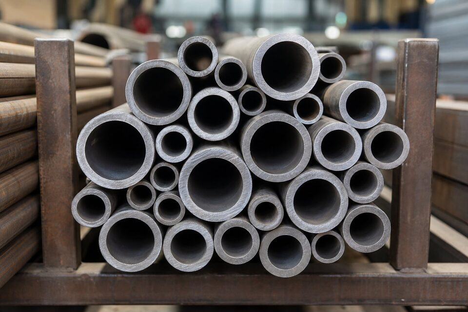

جایگاه تیوب آلیاژی دمای بالا
در بویلرهای نیروگاهی و پالایشگاهی، تیوبهای سوپرهیتر و ریهیتر سالها تحت فشار و دمای بالا کار میکنند. این سرویس سخت، متریالی میخواهد که در برابر خزش و پوستهشدن مقاوم باشد. تیوبهای آلیاژی این استاندارد، پاسخ صنعت به این نیاز هستند.

گریدهای اصلی فریتی
| گرید | ترکیب شاخص | کاربرد |
|---|---|---|
| تی۱۱ | کروم و مولیبدن ملایم | دمای متوسط تا بالا |
| تی۲۲ | کروم و مولیبدن بیشتر | سوپرهیترهای پرفشار |
| تی۹۱ | نه درصد کروم با ریزآلیاژها | بویلرهای پربازده مدرن |
| گریدهای استنلس | آستنیتی برای دمای بالاتر | سوپرهیترهای بسیار داغ |
گریدهای آستنیتی نیز در همین استاندارد برای دماهای بالاتر پوشش داده شدهاند.
عملیات حرارتی و سختی
- گریدهای فریتی باید با عملیات حرارتی مناسب تحویل شوند تا خواص خزشی مطلوب حاصل شود.
- گرید تی۹۱ نیازمند عملیات حرارتی دقیق با محدوده سختی مشخص است.
- کنترل سختی، شاخص صحت عملیات حرارتی محسوب میشود.
- در جوشکاری، پیشگرم و عملیات حرارتی پس از جوش متناسب با گرید الزامی است.
ریسک اختلاط متریال
نکات سفارش
- گرید را بر اساس دمای طراحی و محاسبات خزش انتخاب کنید.
- قطر خارجی و ضخامت را با تلرانس مشخص ذکر کنید.
- الزامات عملیات حرارتی و محدوده سختی را قید کنید.
- گواهی مواد با شماره ذوب و نتایج تست درخواست کنید.
- بستهبندی و حفاظت سر تیوبها را در قرارداد ذکر کنید.
الزامات بازرسی در پروژههای نیروگاهی
- کنترل صددرصدی حک متریال و تطابق با گواهی مواد.
- تست شناسایی مثبت متریال برای جلوگیری از اختلاط گریدها.
- اندازهگیری سختی نمونهای برای صحت عملیات حرارتی.
- تست هیدرواستاتیک یا غیرمخرب مطابق الزامات سفارش.
- بازرسی سطح و سر تیوبها پیش از جوشکاری در دسته.
در پروژههای نیروگاهی، اسناد تحویل تیوب معمولاً شامل گواهی مواد، گزارش تستها و صورت بازرسی است و نبود هر یک از این مدارک میتواند مانع پذیرش شود.
ذکر این نکته ضروری است که تیوبهای مشابه همین خانواده در قالب لولههای آلیاژی سایز بزرگ نیز برای خطوط اصلی بویلر استفاده میشوند؛ انتخاب بین تیوب و لوله تابع طراحی حرارتی و مکانیکی واحد است.
نصب و بازرسی تیوبهای (A213) در بویلر
تیوبهای آلیاژی استاندارد ایدویستوسیزده، وقتی در بویلر یا مبدل حرارتی نصب میشوند، رفتارشان بیش از هر چیز به کیفیت اجرا و پایش دورهای بستگی دارد؛ چون این تیوبها در سختترین شرایط دمایی واحد کار میکنند و کوچکترین ضعف در نصب، خود را در درازمدت به شکل خرابی نشان میدهد. در نصب، اتصال تیوب به شبکه یا هدر معمولا با روش نورد انبساطی یا جوشکاری انجام میشود؛ در نورد انبساطی، میزان انبساط باید کنترلشده باشد، چون انبساط کم باعث نشتی و انبساط زیاد باعث ترک دهانه میشود. در جوشکاری، صلاحیت جوشکار، دستورالعمل جوشکاری تاییدشده و پیشگرم متناسب گرید، الزامات اصلیاند؛ گریدهای پرآلیاژ مانند تینودویک به پیشگرم و عملیات حرارتی پس از جوش حساساند و حذف این مراحل، ریسک ترک را به شدت بالا میبرد. در بهرهبرداری، دو مکانیزم خرابی اصلی باید پایش شوند: خزش در دمای بالا که با تورم موضعی و افزایش قطر تیوب خود را نشان میدهد و اکسیداسیون که ضخامت موثر را به تدریج کم میکند. اندازهگیری دورهای قطر تیوبها و مقایسه با مقادیر اولیه، سادهترین روش شناسایی خزش است و نقاطی که افزایش قطر غیرعادی دارند باید برای بررسی متالورژی نمونهبرداری شوند. در بازرسیهای توقف تعمیراتی، آزمونهای غیرمخرب مانند جریان گردابی برای شناسایی ترکهای سطحی و اندازهگیری ضخامت با فرکانس بالا، پوشش مناسبی برای تیوبها ایجاد میکنند. نکته مهم دیگر، تمیزی سطح داخلی تیوبهاست؛ رسوبهای ناشی از کیفیت پایین آب تغذیه، انتقال حرارت را مختل و دمای فلز را بالاتر از طراحی میکنند و عملا عمر تیوب را کوتاه میسازند؛ بنابراین کنترل کیفیت آب بویلر، به طور غیرمستقیم بخشی از نگهداری تیوبهاست. تعویض پیشگیرانه تیوبهایی که به مرز عمر طراحی رسیدهاند، در توقفهای برنامهریزیشده، همیشه ارزانتر از ترکیدن ناگهانی آنها در حین بهرهبرداری است.
جمعبندی
تیوب آلیاژی دمای بالا، سرمایهگذاری برای دههها کارکرد مطمئن بویلر است. انتخاب گرید صحیح، عملیات حرارتی درست و کنترل هویت متریال، سه رکن اصلی این خرید هستند.
سوالات رایج
چرا برای دمای بالا به آلیاژ کروم نیاز است؟
کروم همراه مولیبدن، مقاومت خزشی و پایداری ریزساختار را در دمای بالا بهبود میدهد و پوستهشدن سطح را کاهش میدهد. هرچه دمای سرویس بالاتر باشد، درصد آلیاژ بیشتری لازم است.
گرید تی۹۱ چه مزیتی دارد؟
این گرید با افزودنیهای ریزآلیاژی و عملیات حرارتی خاص، استحکام خزشی بسیار بالاتری دارد و امکان دیواره نازکتر در دمای کاری بالا را میدهد؛ انتخاب رایج بویلرهای پربازده امروزی.
چرا کنترل سختی در این تیوبها مهم است؟
سختی نامتناسب میتواند نشانه عملیات حرارتی نادرست باشد و رفتار خزشی و جوشپذیری را تحت تاثیر قرار دهد. به همین دلیل محدوده سختی در سفارش و بازرسی کنترل میشود.
خطر اصلی در خرید این تیوبها چیست؟
اختلاط متریالها؛ شباهت ظاهری گریدها باعث میشود جابجایی تصادفی رخ دهد. تست شناسایی مثبت متریال و ردیابی شماره ذوب، راهکار استاندارد برای جلوگیری از این ریسک است.
مطالب مرتبط
- راهنمای لوله آلیاژی کربن-مولیبدن (ASTM A209)
- تیوب مبدل حرارتی کربنی (ASTM A179)
- لوله آلیاژی بدون درز دمای بالا (ASTM A335)
- راهنمای تست شناسایی مثبت متریال
- راهنمای کامل گواهی مواد و تست
با ذکر گرید، ابعاد و دمای طراحی، تیوب آلیاژی با عملیات حرارتی صحیح و مدارک کامل عرضه میشود. تست شناسایی متریال نیز قابل هماهنگی است.
مشاهده صفحه محصول ← ثبت RFQ همین محصولتامین این تجهیزات را به پیشرو تجهیز فرتاک بسپارید
شرکت پیشرو تجهیز فرتاک تامینکننده تخصصی تجهیزات صنعتی برای پروژههای نفت، گاز، پتروشیمی، فولاد و نیروگاهی است. برای دریافت پیشنهاد فنی و قیمت، استعلام (RFQ) خود را ثبت کنید تا کارشناسان مهندسی فروش در کوتاهترین زمان پاسخ دهند.
- تامین تیوب آلیاژیتیوب بویلر و سوپرهیتر با مدارک کامل
- تامین تجهیزات نیروگاهیپکیج مواد مطابق مدارک پروژه